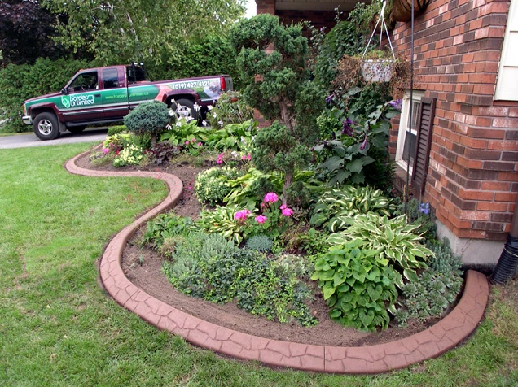
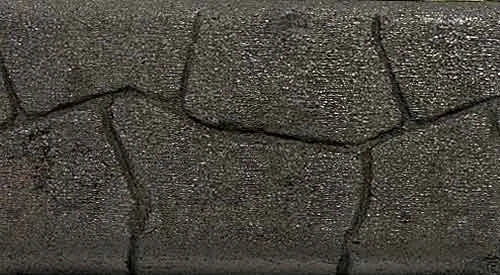
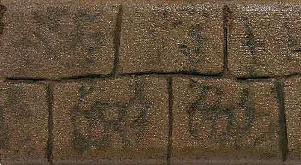
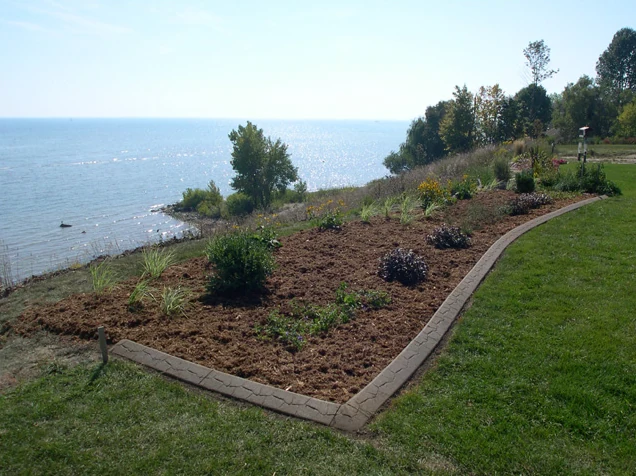

Simcoe, Ontario
A clean edge for your garden.
Custom concrete borders that follow the curves of your lawn, frame your flower beds and keep mulch where it belongs.

Concrete work for your landscape


See the finish up close
Choose the shape of the curb, the pattern pressed into it and the colour mixed through the concrete. Bill brings samples to the layout visit.
Compare profiles and patterns

A family business in Simcoe
Bill Vanderlip measures and installs the borders himself. Debbie looks after the office. Whether you’re choosing a pattern or asking about care, you deal directly with the people who do the work.
Meet Bill and Debbie
Have a border in mind?
We’ll walk the property with you and measure it for a free written quote.